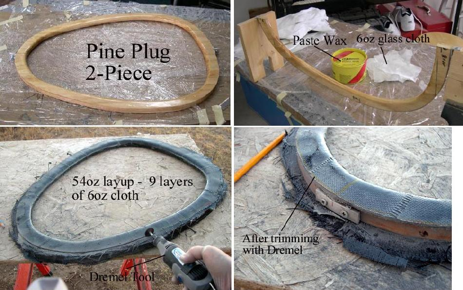

| Fiberglass Coaming (1 of 4) | Menu Previous Page Next Page |
|
 A two-piece plug is first made from 1 inch pine or cedar. The sections are connected with aluminum plate or aluminum "L". After sanding, the plug sections are sealed with 2 coats of epoxy resin. On this simple coaming layup, a plug, not a mold, is used. Coat the plug with several coats of release wax or Johnsons paste wax to prevent the layup from sticking. Cut numerous small sections of 6oz. fiberglass cloth. The sections will be overlapped to create the coaming. Mix small batches of Epoxy resin with a small amount of Graphite powder ( for black color) and cover the plug with 9 layers of the 6 oz. cloth. After curing over night, trim the excess material with a Dremel tool using two cutoff wheels. Using two wheels helps prevents the wheels from breaking. |
|